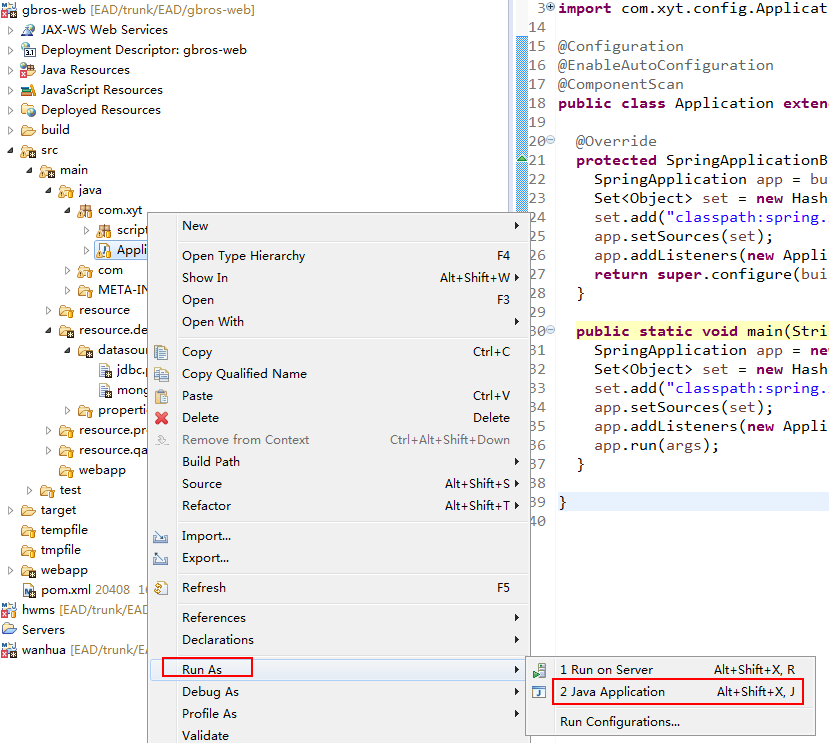

1.工程均导入完成后，按顺序进行工程编译（参见“程序打包”）
2.启动web应用： gbros-web工程：com.xyt.Application-->右键

tomcat启动完成后，浏览器进行登录验证：
localhost:8080/develop
本地环境启动后会连接EAD开发环境数据库，最终会发布到测试环境、生产环境，所以在里面进行操作一定要慎重！
如果要进行配置的熟悉、练手，使用以下环境：
10.10.123.54:8080/develop